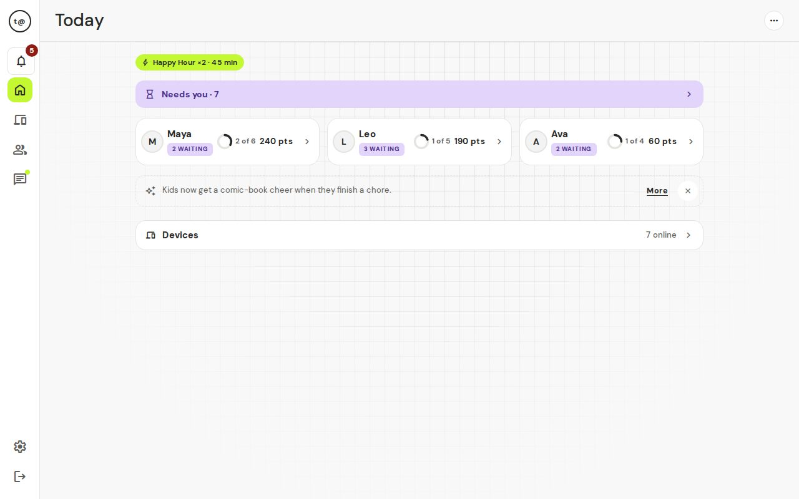
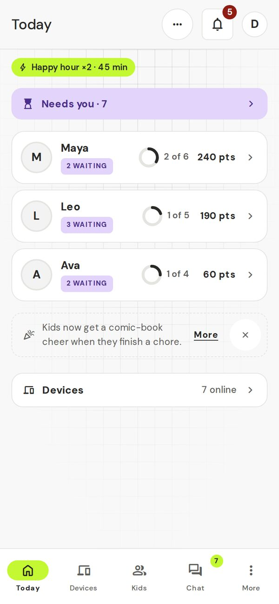
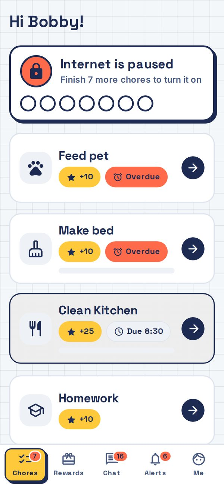
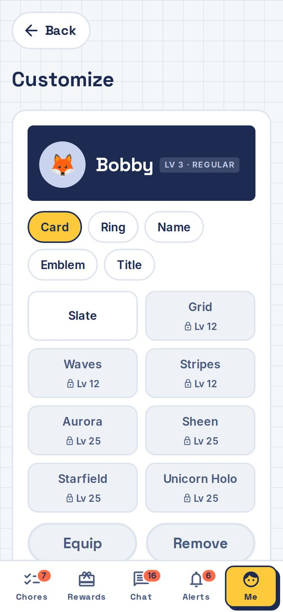
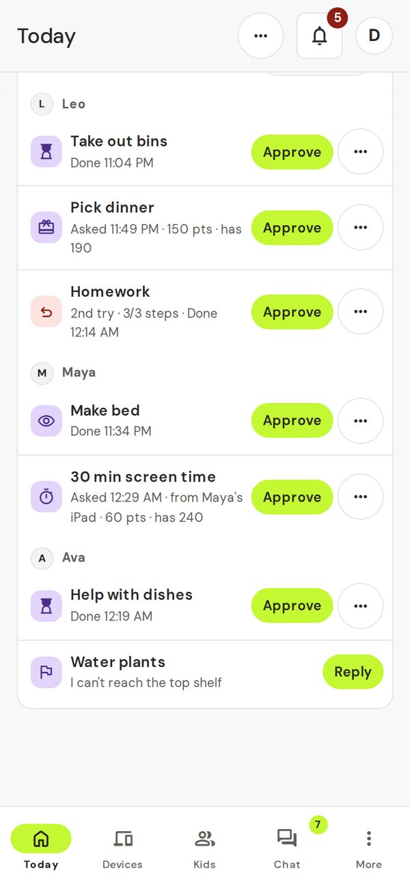

Chores first, then screens.
A free family app where kids do their chores, parents approve them, and the home internet only switches on once the chores are done. It runs on a small computer in your home, so your family's data stays in your house.


How it works
Three simple steps, every day.
-
Feed the dogTo do+15
Kids get chores
Each morning, your kids see their chores for the day, in a look made for their age. Chores earn points, and points buy rewards and extra screen time.
-
HomeworkNeeds OK+30
Kids say they're done
They tick the steps, add a photo if you asked for one, and tap "I'm done!". Then it waits for your OK.
-
HomeworkApproved+30
Internet comes back
You approve it, or send it back with a note. When the last chore is approved, their devices come back online within seconds, inside the hours you set.
What kids see
Three looks: Little (5–8), Kid (9–12) and Teen (13+).

Today's chores
Each chore shows its points and when it's due. Tap one to see its steps, add a photo, or tell Mom or Dad.

Levels & flair
Kids earn badges, level up, and unlock cards, rings and titles for their name in Customize.
What parents see
Everything you need in one view.
Today
See each kid's day at a glance: what's done, what's waiting and what's overdue.

Needs you
One list for everything waiting: chores, redos, screen time and reward requests. Approve them one by one or all at once.
What's new in 2.13
More for kids to work toward, less for parents to tap.
Goals
Kids save toward goals you price, their own or the family's. Extra screen time can be a goal, and a "Get out of jail free" card cancels a penalty.
Penalties & earn-back
Small, medium, big or your own. Make-up chores shrink a penalty, so a slip-up can be put right.
Homework mode
Pick the study sites kids may open while the rest of the internet stays paused.
Minigames
Chores earn quick games, with a weekly board. Games sleep at bedtime and in family quiet hours.
"How strict?" presets
One choice sets chores, hours and extras by age, per kid if you like. Switch later without losing your edits.
Less tapping
Trust mode with spot checks, bedtime auto-approve and a weekly recap. Calmer parent screens.
Every network, your Wi-Fi
Multi-network blocking: the box finds and blocks devices on every network it is plugged into. Change its Wi-Fi from Settings.
Blocked phones stay on Wi-Fi
A blocked phone stays joined and shows "Connected". Plain web sites show a block page, and the kid sees a notice saying why. Secure sites just close.
Auto-relink
A phone that forgets the network and returns with a new private Wi-Fi address keeps its owner and rules. You can undo a wrong match.
Today, with more
A Goals card, a "This week" trend, Suggestions you can dismiss or mute, a warnings strip, and update and power tips.
Small boxes welcome
Runs on modest hardware like a Raspberry Pi 4. Can use your own Postgres database if you have one.
Step-by-step guides: Homework mode, Time banking, Prices per device group, Less parent work, Calm screens, Rewards and celebrations, Minigames, Goals, Small devices and Postgres, Networks and Wi-Fi. See all feature guides.
Is it right for my family?
t@sk4ce works best when you want chores tied to internet access.
What it does well
- Kids from about 5 up. Little, Kid and Teen modes keep it simple or detailed.
- Families with home Wi-Fi and a small always-on Linux computer, like a Raspberry Pi.
- Parents who can check the app once a day or more.
- Kids add it to their home screen like an app.
- Kids who want something to work toward (points, levels, rewards).
- Price screen time per device group: consoles can cost more, speakers can stay free.
- Save unused screen time for a bigger day, up to a cap you set.
- Comic-book celebrations, Happy Hours and streak freezes keep chores fun past week one.
- Less tapping, if you want it: trust mode lets chores approve themselves with random spot checks, and a Sunday recap shows who needs a look.
Set it up in 20 minutes
Install it, then a short eight-step setup.
-
Copy the one-line installer
Copy this line, then paste it into the Terminal on your home box and press Enter.
curl -fsSL https://jmo-labs.github.io/tskfrce/install.sh | sh -
Let the installer run
It installs Docker if needed, downloads t@sk4ce and starts it. The first time takes several minutes. Your data stays on your box.
-
Open the app on your phone or computer
Go to the address the installer shows, like
http://192.168.1.50:3000. Install steps → -
Answer eight short questions
You, Family, Kids, Kids' phones, Chores, Devices, Hours, and an optional extras step. Good hours are already filled in and a few starter chores are suggested. About 7 minutes. Setup guide →
-
Test it and show your kids
Press Test block on a kid's device, then bookmark the kid page on it. How to test →
Privacy
Your family's data belongs to you.
Stays in your home
t@sk4ce runs on a computer in your house. Chores, kids, points, chat and photos stay on your network.
No accounts with us
There is no t@sk4ce server. No sign-up, and passwords are saved only on your box. You own your data.
No ads or trackers
t@sk4ce is free and open source. No ads, no analytics, nothing sold.
Extras are opt-in
GIFs in chat, pings to your chat apps and remote access are off until you turn them on. GIF searches go through your box, so GIPHY never sees a kid's device. Kid phone alerts are on by default: short generic lines like "You have a new chore" go through a public relay (ntfy.sh).
Frequently asked questions
What computer do I need?
A small computer that runs Linux and stays on: a Raspberry Pi 4 or 5 (4 GB or more) or an old computer. Plug it into your router with a network cable. See What you need.
Do I need a special router?
No. Most home routers work. A few, mostly some mesh systems, can stop the box from pausing devices. The Test block button tells you in a minute. Router list →
What if my internet goes down?
t@sk4ce keeps working on your home Wi-Fi: kids can still do chores and you can still approve them. It doesn't need the internet, only your home network.
Can I use it when I'm away from home?
Yes. With the free Tailscale app you can open t@sk4ce from anywhere and approve chores. It's an optional tip on the last screen of setup. Remote access → Pausing only works on your home Wi-Fi: a phone on mobile data isn't covered.
What if a kid finds a workaround?
If a paused device keeps getting through, for example after someone changes its network settings, you get an alert that it "got around the lock". You also hear if a paused device tries a VPN, if a device may be a different one, or if someone keeps guessing a parent's password. Hotspots and mobile data aren't covered: lock those on the phone with Family Link or Screen Time. That's your cue to talk about trust. The app doesn't spy further.
Where's the manual?
The full guide is here. Check Troubleshooting for common issues.
Is this open source?
Yes, under the GPL-3.0. The code is on GitHub.
For technical folks and contributors:
Architecture & engineering →